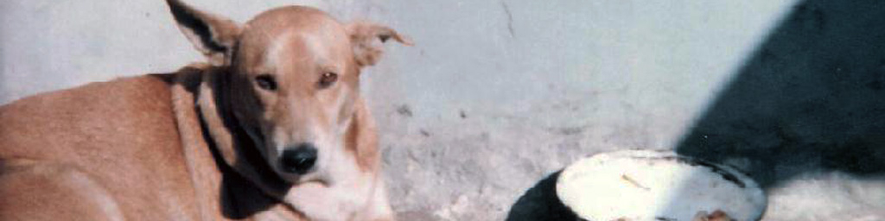
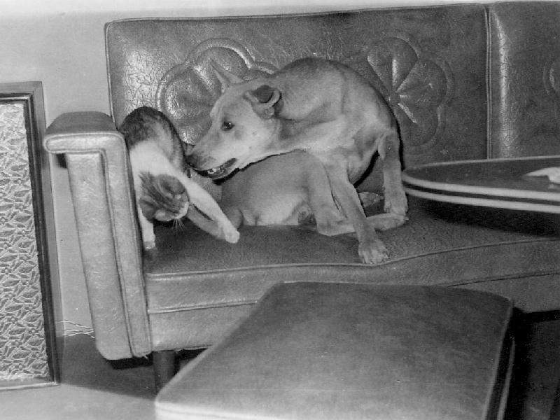
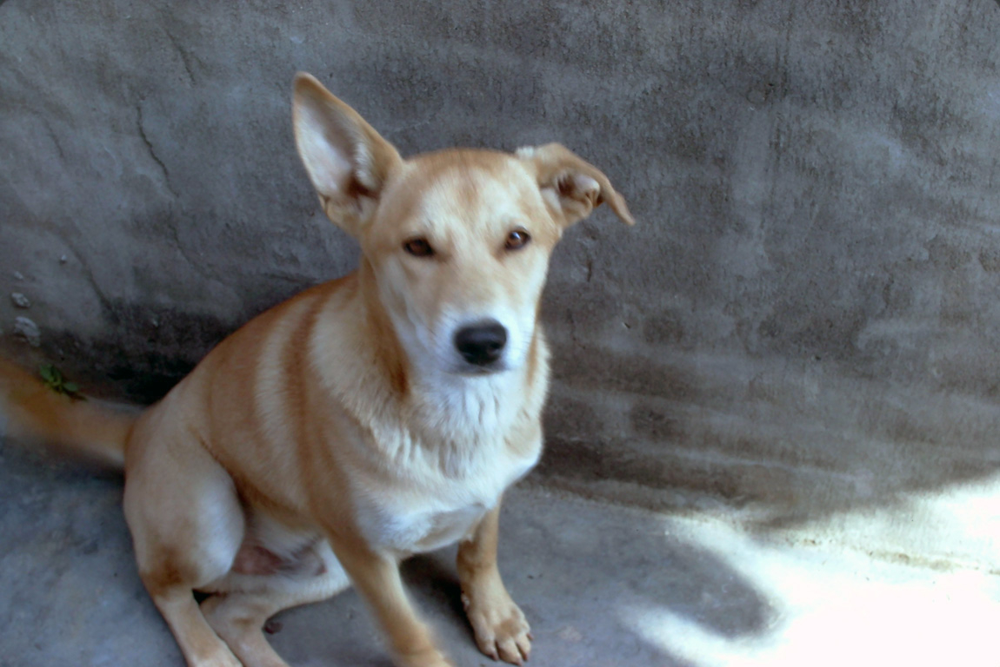

|
When we started out on our honeymoon in Taipei, the capitol city of Taiwan, we bought a little brown puppy from a street vendor. We were told he was a pure-bred something or other (he cost us all of $5.00), but he turned out to be just a sweet, lovable mutt. We named him Blue and brought him with us on our honeymoon. Over the years that we had him, he was always a lot of fun. We still have many fond memories of him and his many antics. Blue's bathAt some point on our honeymoon, we pulled off the road to give Blue a bath in a stream that ran along side the roadway, and Mei-O almost accidentally drowned the poor little guy, letting him loose in the stream thinking he'd be able to swim around and 'play' in the water (I told her dogs naturally knew how to swim). As small as he was, the current was a little too strong, and we had to fish him out, a little scared, but none the worse for the ordeal. Blue held hostageNear the end of our honeymoon, we stopped in Tainan where we went to visit Mei-O's cousin. I never really liked her very much and didn't want to spend much time at her house, so I suggested we (Mei-O, I and Blue) should just do some sightseeing around Tainan then head back to Taichung. But she insisted we have dinner with her and her family that evening, and, in order to make sure we returned, she held Blue 'hostage' at her house while we went sightseeing. She insisted, so we left Blue with her (she had a big yard where he could run around), and we went off on our own. When it came time to go back for dinner, I didn't really feel like seeing her again, so we drove over to her house where I sneaked into the yard and grabbed Blue. That evening we headed back towards home, finishing up the last leg of our honeymoon.Front door-back doorIn Taichung, we lived in a small house where Blue mostly lived outside in the
backyard. We used to play this game with him where Mei-O would stand at the front
door and call him, and he'd come running around the house to her. Then I, standing by
the back door, would call him and he'd come running to me, always with his tail wagging
wildly. We'd always give him a pat on the head or a scratch behind the ears or a big
hug when he got to either of us, and occasionally rewarded him with treats. We would do
this for quite a while (he never caught on!), and while it
may seem like we were teasing him, he really seemed to enjoy the game and got a lot
of good exercise from it.
 One day after a typhoon hit Taichung, we came home and noticed a little tiny black and white cat along side the road near where we parked our car. It couldn't have been more than a few weeks old (maybe just a few days old) and was soaking wet and lying very still, looking half dead. We took it home and cared for it and within a few days, we brought it back to life. As small and fragile as it was, we had to be pretty careful to keep Blue away from it, but we'd hold it up to the screen door for Blue to see and sniff. I think he was a little jealous at first, but after a while, as Tiger got older and bigger and stronger, we put the two of them together more and more, and they soon became good friends. They'd play together and we'd even find them sleeping together sometimes. This great friendship lasted for several years. After Mei-O and I left Taiwan, Blue and Tiger continued to live with Mei-O's family. One day, Tiger, who, like most cats was very free and independent, failed to come home. For several days there was no sign of him, and Blue (as Mei-O's sister Mei-Yu tells us) seemed very saddened, missing his friend a lot. Occasionally, Blue would sneak out of the yard and go off somewhere for a while (he wasn't allowed to run free outside very much, since free-running dogs were fair game for those who chose to catch them and eat them.) One day Mei-Yu followed him, and he led her to a bushy grove where Blue had been going to see Tiger's lifeless, now decaying body. Mei-O's mom came and recovered the body and buried it in a field near their house. They tell us Blue used to go there often and visit his old friend's grave. I can't verify this, since I never saw it happen, but that's what the family tells us, and I guess I've no reason to doubt it. DragonfliesThere are a lot of dragonflies in Taiwan, and Blue loved chasing them. He could actually jump quite high, straight up, nipping at them as they flew overhead, and he'd often catch one and eat it. While he was young and healthy, he never tired of chasing dragonflies. I suppose he built up some pretty good leg muscles, the way he could jump. He never chased anything else, just dragonflies. SuppertimeJust like Snoopy, when blue was hungry, he'd pick up his bowl in his mouth and stand by the screen door, waiting for someone to feed him. Sometimes, when he had to wait too long, he'd bang the bowl on the ground to let someone know it was feeding time. His diet, as with most dogs in Taiwan, was strictly leftover people-food, a mixture of rice, meat (usually beef, pork or chicken), fish, and vegetables, all left over from previous meals, all mixed together in a not-very-appetizing-to-people conglomeration, which he, being a dog and not a person, always seemed to love. His bowl was always licked clean.  Blue's color (a light brown) turned out to be his curse. Dogs of his color were consider to be the tastiest, and we always had to be very careful to keep him in the yard. As he got older and wanted to 'sow his wild oats', Mei-O's mom found it very hard to keep him contained. She was so afraid he'd get out one day and end up on someone's dinner table that she had him castrated, so he wouldn't feel the need to run around the neighborhood looking for females. His castration really changed him. He got extremely lethargic and just laid around a lot and got really fat. But he also, and we don't know if this was related to the castration or not but it did occur at about the same time, developed a case of doggie-epilepsy. He would begin getting very nervous, pacing around frantically, then he'd fall down to the floor and have an epileptic-like fit, foaming at the mouth, banging his head and whole body noisily against the hard cement of the courtyard, and writhing in violent motion. This would occur at anytime, day or night, and pained us all to see him in such a state. Of course, we'd run to comfort him, and, especially when it was over, held and petted him to try to make him feel better. I remember those fits as one of the saddest things I've ever encountered, feeling so helpless watching my good friend suffer. I suppose here in the West, we would probably have put him down, but that wasn't an option for our family's pet in Taiwan. Everyone loved Blue so much, no one ever mentioned it. Hot Dog arrivesMei-yu tells us that later in Blue's life, their family got another dog. They named him Hot Dog, and he got along OK with Blue. The thing she remembers most is their feeding time. Each had his own bowl, and they were fed at the same time. But Blue always growled at Hot Dog and wouldn't let him eat until Blue was done, eating out of both bowls, yet always saving enough for Hot Dog. Blue was the elder, and he let Hot Dog know that that meant he was in charge. That seems pretty out of character for the Blue that I remember, so gentle and easy-going, but I suppose as he got older and sicker, he probably changed. But I still think of him the way I want to remember him, the way he was when I knew him, when he wouldn't hurt much more than a dragonfly. EpilogueBlue stayed with Mei-O's
family after we left Taiwan in 1970. We saw him again when we went back to live in
Taiwan from June of 1972 until June of 1973 while I was attending Tunghai University
just outside of Taichung. He died sometime in 1974 or 1975 at only about five or six
years of age.
Last Modified: November 22, 2001 |
{kind=link}
{kind=link}